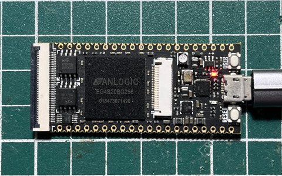
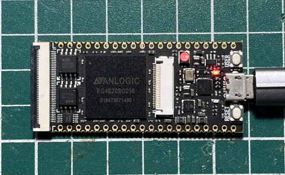

main.v
module main(clk, led);
input clk;
output reg led;
reg [25:0] clk_cnt;
initial begin
led = 0;
clk_cnt = 0;
end
always @(posedge clk) begin
clk_cnt = clk_cnt + 1;
if (clk_cnt > 24000000) begin
clk_cnt = 0;
led = ~led;
end
end
endmodule
main.adc
set_pin_assignment {clk} {location=k14;}
set_pin_assignment {led} {location=r3;}
完成

